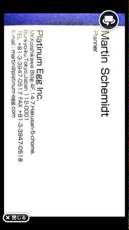

PARTICIPANTS:
DB ID: 0
Current name: You
Address book name: You
User name:
Phone Number:
Key:
DB ID: 480
Current name: emilio
Address book name: Emilio DICO
User name: emilio
Phone Number: 09061536881
Key: 090 6153 6881
Messages:
2013/11/29 20:10:19, "0:You":
Sabes donde esta Scramble?
2013/11/29 20:12:10, "480:emilio":
no
2013/11/29 20:14:20, "0:You":
OK
Pues nos vemos en el perro.
2013/11/29 20:17:08, "480:emilio":
chachi
2013/11/29 20:17:29, "480:emilio":
ya estoy tirando para alla
2013/11/29 20:18:14, "480:emilio":
A que hora llegas?
2013/11/29 20:18:33, "0:You":
En 10min
2013/11/29 20:19:19, "480:emilio":
casi como yo
2013/11/29 20:30:24, "480:emilio":
Atasco
2013/11/29 20:31:14, "0:You":
Ya la has liado?
Yo ya he llegado
2013/11/29 20:31:41, "480:emilio":
voy en autobus
2013/11/29 20:32:19, "480:emilio":
estoy cerca pero hay un buen atasco
2013/11/29 20:32:44, "480:emilio":
ya
2013/11/29 20:33:01, "480:emilio":
estoy alli en tres min
2013/11/29 20:36:32, "480:emilio":
Akistoy
2013/11/29 20:36:43, "0:You":
Oh
2013/11/29 20:37:04, "480:emilio":
Delante de la estatua
2013/12/28 11:09:18, "480:emilio":
Picha
2013/12/28 11:10:03, "480:emilio":
vas a poder meterle canya durante estos dias?
2013/12/28 11:11:03, "480:emilio":
Teniamos que tener el prototipo para diciembre y me da que aun falta
2014/01/01 00:13:15, "0:You":
Feliz año
2014/01/01 00:19:53, "480:emilio":
igualmente!
2014/01/01 00:20:22, "480:emilio":
este va a ser mejor que el anterior!
2014/02/16 12:56:12, "480:emilio":
Buenas
2014/02/16 12:56:20, "480:emilio":
Que tal ayer?
2014/02/16 12:57:00, "480:emilio":
Hoy por fin ha amainado
2014/02/16 19:29:08, "480:emilio":
None
2014/02/18 21:43:05, "0:You":
Me han hecho una oferta que no he podido rechazar.
A partir de mañana tengo que volver a trabajar en Crooz.
2014/02/18 21:45:37, "480:emilio":
que te han dicho?
2014/02/19 11:24:29, "0:You":
He estado pensando sobre lo que me dijiste anoche.
No te puedo dejar a ti solo y con el culo al aire.
Me vengo a DICO a poner el culo yo tambien.
He renunciado a Crooz.
2014/02/19 11:38:37, "480:emilio":
Gracias. Esto va a ir bien entre todos. Seguro.
2014/03/06 21:39:59, "0:You":
Te he enviado el Nuevo binario del pinball por Skype
2014/03/06 22:08:12, "480:emilio":
Gracias
2014/03/10 21:27:08, "0:You":
Te he enviado por mail
Nuevos binarios.
Un link para booking en asiana air 107,000¥/pers.
2014/03/10 21:27:41, "480:emilio":
gracias
2014/03/12 01:04:12, "480:emilio":
estas despierto?
2014/03/12 01:04:35, "480:emilio":
estoy pillando el billete
2014/03/12 01:05:03, "480:emilio":
y me ha salido una combinacion rara que mola
2014/03/12 01:05:14, "480:emilio":
y queria consultarte
2014/03/12 01:06:06, "0:You":
Dime
2014/03/12 01:12:01, "480:emilio":
Te llamo
2014/03/15 21:43:25, "0:You":
Llego a las 22:30 al aereo
2014/03/15 21:43:43, "480:emilio":
vale
2014/03/15 22:07:48, "0:You":
Cual sera?
Terminal 1 o 国際線ビル？
2014/03/15 22:13:06, "480:emilio":
i de internatioNal
2014/03/15 22:13:25, "0:You":
None
2014/03/15 22:22:32, "480:emilio":
yastoy
2014/03/15 22:23:46, "0:You":
Me has ganado
Llego en 3min
2014/03/15 22:27:04, "480:emilio":
Tercer piso, mostrador h
2014/03/18 09:37:08, "480:emilio":
como vas?
2014/03/18 09:37:19, "480:emilio":
ya he terminado
2014/03/18 09:37:34, "480:emilio":
Me voy pal hotel
2014/03/18 09:52:29, "0:You":
Yo tambien he terminado.
Ya estoy llendo para el hotel
2014/03/18 09:52:55, "480:emilio":
chachi
2014/03/19 00:56:09, "0:You":
Te traere tus 名刺 en 30min
2014/03/19 00:56:29, "0:You":
Aqui estan las 2 cajas
2014/03/19 01:00:27, "480:emilio":
con una basta
2014/03/20 01:52:58, "480:emilio":
como vas?
2014/03/20 01:54:29, "0:You":
Estoy a 3 esquinas
2014/03/20 04:27:44, "0:You":
Estoy viniendome
Llego en 15
2014/03/20 04:30:24, "480:emilio":
estoy en el sears
2014/03/20 04:31:02, "480:emilio":
creia que no venias
2014/03/20 04:31:24, "0:You":
Sears
2014/03/20 04:31:26, "0:You":
Ok
2014/03/20 10:02:30, "480:emilio":
picha
2014/03/20 10:03:02, "480:emilio":
donde andas?
2014/03/20 10:04:48, "0:You":
Todavia en el GDC
North hall
2014/03/20 10:05:07, "0:You":
Ya has terminado?
2014/03/20 10:07:33, "0:You":
Estan cerrandolo todo
2014/03/20 10:09:20, "480:emilio":
donde estas?
2014/03/20 10:10:01, "0:You":
Me han sacado fuera.
Ahora camino para el hotel
2014/03/20 10:13:31, "0:You":
Hoy hay fiesta?
2014/03/20 10:14:55, "480:emilio":
vale
2014/03/20 10:14:56, "480:emilio":
yo estoy un poco mas en la game connection
2014/03/20 10:14:56, "480:emilio":
si
2014/03/20 10:15:04, "480:emilio":
hay fiesta a partir de las 20:00 o as:i
2014/03/20 10:15:13, "480:emilio":
fiesta de empresas españolas
2014/03/20 10:16:02, "0:You":
Oh!
Vamos a dormir una horita, no?
2014/03/20 10:20:52, "480:emilio":
adelante
2014/03/20 10:20:53, "480:emilio":
si puedo voy al hotel
2014/03/21 03:12:05, "0:You":
Quedamos en el museo y me prestas la identificacion?
2014/03/21 03:14:22, "480:emilio":
Ahi estoy
2014/03/21 03:14:43, "480:emilio":
bueno, en la cafeteria
2014/03/21 04:20:27, "480:emilio":
endeve?
2014/03/21 04:20:32, "480:emilio":
yostoy ende antes
2014/03/21 04:46:22, "480:emilio":
yastoy
2014/03/21 04:47:18, "480:emilio":
None
2014/03/21 04:49:45, "480:emilio":
Donde nos vemos?
2014/03/21 04:50:21, "0:You":
GREE
2014/03/21 09:01:51, "0:You":
A que hora es la reserva?
2014/03/21 09:01:57, "0:You":
No la encuentran
2014/03/21 09:03:25, "0:You":
Ya la han encontrado
2014/03/21 09:20:07, "480:emilio":
2030?
2014/03/21 09:20:18, "480:emilio":
De que?
2014/03/21 09:21:11, "0:You":
La camarera del Mortis no encontraba tu nombre.
Gracias!
2014/04/04 21:15:54, "480:emilio":
el itotooshi no me funciona
2014/04/04 21:16:07, "480:emilio":
no me lo puedo bajar
2014/04/04 21:16:18, "480:emilio":
Me da error
2014/04/04 21:17:07, "0:You":
Pues el otro iPad si que ha Ido bien.
Que error?
2014/04/04 21:50:36, "480:emilio":
Me lo bajo
2014/04/04 21:50:59, "480:emilio":
Pero antes de terminar, da error
2014/04/04 21:51:16, "480:emilio":
y no puedo ejecutarlo
2014/04/04 21:52:25, "0:You":
Prueba a borrar el itotoshi que ya esta en el ipad.
Y vuelve a probar
2014/04/04 21:52:48, "480:emilio":
vale
2014/04/04 21:53:45, "480:emilio":
nada
2014/04/04 21:54:18, "0:You":
Da error ...
Que dice ese error?
2014/04/04 21:54:36, "480:emilio":
otra cosa, a la apli llamala dico itotooshi o algo asi
2014/04/04 21:55:02, "480:emilio":
imposible desc la apli
2014/04/04 21:55:56, "480:emilio":
en estos momentos
2014/04/04 21:56:04, "480:emilio":
no dice nada mas
2014/04/04 21:56:23, "0:You":
No se ni por donde tocar.
No sera que tienes otra apli con el mismo nombre, y no puede sobreescribir?
2014/04/04 21:56:46, "480:emilio":
eso pense
2014/04/04 21:57:06, "480:emilio":
y las borre todas, pero nada
2014/04/04 21:57:51, "0:You":
El nombre del iPad es dico's o Emilio's ?
2014/04/04 21:58:15, "480:emilio":
Puedes hacer una version rapida para web o pc?
2014/04/04 22:00:39, "0:You":
Si.
He tenido suerte que me he subido el codigo fuente al google drive antes de venir a casa.
En 30min lo tendre
2014/04/04 22:01:38, "480:emilio":
chachi, perdona las molestias
2014/04/04 22:02:29, "0:You":
Para nada.
Ya se que mañana es un dia importante
2014/04/05 15:08:43, "480:emilio":
Picha
2014/04/05 15:40:16, "0:You":
Como va el hanami?
2014/04/05 19:42:10, "480:emilio":
picha
2014/04/05 19:42:22, "480:emilio":
como vas?
2014/04/05 19:42:48, "480:emilio":
estamos en om sando
2014/04/09 10:13:12, "480:emilio":
picha
2014/04/09 10:13:26, "480:emilio":
has llegado a la ofi?
2014/04/09 10:42:54, "0:You":
casi estoy, llego en 20
2014/04/09 10:48:58, "480:emilio":
vale
2014/04/09 10:50:03, "480:emilio":
ayer nos pidieron un porting a html5 y quiero hablar si es posible hacerlo o no
2014/04/09 10:51:14, "480:emilio":
aparte, el itotooshi va bien
2014/04/09 10:52:00, "0:You":
Ya he leido que hay que montar todos los UI en la proxima entrega
2014/04/09 10:52:10, "480:emilio":
si
2014/04/09 10:52:31, "480:emilio":
ah y ayer en yahoo muy bien
2014/04/09 10:52:41, "480:emilio":
luego te cuento
2014/04/09 10:52:52, "0:You":
Guay!
2014/05/14 19:32:40, "0:You":
Podemos enviarles el codigo fuente a SpicySoft?
2014/05/14 19:33:06, "480:emilio":
para que?
2014/05/14 19:34:15, "0:You":
No puedo conectar el Playgie a Android.
2014/05/14 19:35:16, "0:You":
Me salen muchos "charidx" en los logs...
Creo que no lo han reimplementado bien para ito
2014/05/14 19:37:59, "480:emilio":
Vale
2014/05/14 19:38:16, "480:emilio":
Pero explicadselo bien
2014/05/15 19:43:43, "480:emilio":
No se te olvide echar un vistazo a lo de little future
2014/05/15 19:58:23, "0:You":
OK
2014/05/16 09:08:50, "480:emilio":
Me retraso un poco
2014/05/16 09:09:20, "480:emilio":
Empieza little future sin mi
2014/05/16 09:25:46, "0:You":
OK
2014/05/16 10:04:05, "480:emilio":
Endeve?
2014/05/20 19:56:58, "0:You":
Le voy a dar 1 horita a Alberto.
Asi aprovecho para cenar y ducharme.
Si veo que no ha avanzado, lo hago a mi manera.
2014/05/20 20:33:59, "480:emilio":
Vale
2014/05/20 20:34:20, "480:emilio":
El itotooshi que tal?
2014/05/20 20:34:31, "480:emilio":
Algun avance?
2014/05/20 20:38:53, "0:You":
El itotooshi esta parado
2014/05/20 20:39:14, "480:emilio":
Puf
2014/05/20 20:39:37, "480:emilio":
Termina hoy little future
2014/05/20 20:39:50, "480:emilio":
Y olvidate
2014/05/20 20:39:56, "480:emilio":
De el
2014/05/20 20:43:23, "480:emilio":
Proyecto
2014/05/21 19:35:22, "480:emilio":
Picha, como vas?
2014/05/21 19:38:00, "0:You":
He subido los binarios al chatwork.
Ya tiene efectos, popup windows, y advertisement banner.
2014/05/21 19:49:51, "480:emilio":
Chachi
2014/05/21 19:50:43, "480:emilio":
Lo veo
2014/05/21 19:51:13, "480:emilio":
Que falta?
2014/05/21 19:51:29, "480:emilio":
Los modulos?
2014/05/21 19:56:08, "0:You":
creo que han cambiado cosas en el server del Playgie.
tengo que actualizar plugins.
2014/05/21 19:56:44, "480:emilio":
Puf
2014/05/21 19:57:05, "0:You":
Otro problema sera que el Fluct (banners) no es compatible con Unity para Android.
Habra que hacer algunas filigranas para hacerlo funcionar.
2014/05/21 19:57:08, "480:emilio":
Si, eso vi en el chatwork
2014/05/21 19:57:55, "480:emilio":
Puf
2014/05/21 19:58:00, "480:emilio":
Macho
2014/05/21 19:58:19, "480:emilio":
Eso es una cagada
2014/05/21 19:59:40, "480:emilio":
Cuanto se alarga la cosa?
2014/05/21 20:00:27, "0:You":
Al Seva le da mucho palo hacerlo.
Hay que compilar otra app, solo para el Fluct. Y hacer un merge con el ItoTooshi compilado.
Tendre que hacerlo yo.
A ver si 1 o 2 dias.
2014/05/21 20:00:48, "480:emilio":
puf
2014/05/21 20:01:12, "480:emilio":
Puf
2014/05/21 20:01:19, "480:emilio":
Vaya leche
2014/05/24 09:27:31, "480:emilio":
[LINE:ディズニー ツムツム]
emilioさんがハートをプレゼントしました！
1時間以内にゲーム内のメールボックスで受け取ると、200コインももらえます!今すぐ受け取ろう！
(Binary)
2014/06/08 18:33:19, "480:emilio":
[LINE:ディズニー ツムツム]
emilioさんがハートをプレゼントしました！
1時間以内にゲーム内のメールボックスで受け取ると、200コインももらえます!今すぐ受け取ろう！
(Binary)
2014/06/09 09:50:46, "480:emilio":
[LINE:ディズニー ツムツム]
emilioさんがハートをプレゼントしました！
1時間以内にゲーム内のメールボックスで受け取ると、200コインももらえます!今すぐ受け取ろう！
(Binary)
2014/06/12 21:56:18, "0:You":
You sent a photo.
2014/06/12 22:10:23, "480:emilio":
Mola?
2014/06/12 22:10:28, "480:emilio":
Que tal?
2014/06/12 23:01:46, "0:You":
Muy bien
He encontrado mucha peña interesante.
Buenas noches!
2014/06/26 10:06:28, "480:emilio":
[LINE:ディズニー ツムツム]
emilioさんがハートをプレゼントしました！
1時間以内にゲーム内のメールボックスで受け取ると、200コインももらえます!今すぐ受け取ろう！
(Binary)
2014/09/02 21:34:13, "480:emilio":
Manyana
2014/09/02 21:34:15, "480:emilio":
A
2014/09/02 21:34:19, "480:emilio":
Las
2014/09/02 21:34:29, "480:emilio":
0915 en
2014/09/02 21:34:37, "480:emilio":
Minato mirai
2014/09/02 21:34:42, "480:emilio":
Vale?
2014/09/02 21:34:59, "0:You":
2014/09/02 21:35:18, "480:emilio":
Bueno
2014/09/02 21:35:32, "480:emilio":
En pAifico yokohama
2014/09/02 21:35:57, "480:emilio":
A la salida de minato mirai
2014/09/02 21:36:10, "0:You":
Ok
Hasta mañana!
2014/09/02 21:36:27, "480:emilio":
chachi
2014/09/03 08:57:15, "0:You":
09:16にみなとみらいに着きます
--- from 駅すぱあと ---
2014/09/03 09:24:05, "480:emilio":
Ya estoy
2014/09/03 09:24:09, "480:emilio":
Tu
2014/09/03 09:24:16, "480:emilio":
Endeve?
2014/09/03 09:24:54, "0:You":
Lobby
2014/09/03 09:25:15, "480:emilio":
Vale
2014/09/03 09:25:26, "480:emilio":
Voypalla
2014/09/03 09:26:20, "0:You":
メインホールに入った
2014/09/03 09:27:26, "0:You":
Que cacharros que construye la peña
2014/09/03 09:29:04, "0:You":
Hay una cola terrible
Que hago?
2014/09/03 09:29:44, "480:emilio":
no te veo
2014/09/03 09:30:26, "0:You":
Smoking area
2014/09/03 09:30:30, "480:emilio":
Voy al main hall
2014/09/03 16:04:04, "480:emilio":
Voy acjo
2014/09/03 16:04:22, "480:emilio":
Abajo
2014/09/03 16:04:51, "480:emilio":
Endeve?
2014/09/03 16:06:20, "0:You":
Smoking room
2014/09/03 16:06:55, "480:emilio":
Chachi
2014/09/04 20:23:30, "0:You":
He pillado a los creadores de Unity chan.
Nos van a dar soporte gratis.
2014/09/04 22:19:27, "480:emilio":
Mola
2014/09/05 15:31:51, "480:emilio":
Endeve?
2014/09/05 15:32:06, "480:emilio":
Yastamos aqui todos
2014/09/05 15:34:41, "0:You":
Que rapidez!
Llego con el Seva a las 15:56
2014/09/05 15:36:32, "480:emilio":
急いで
2014/09/05 15:59:14, "480:emilio":
Venid en taxi
2014/09/05 15:59:42, "480:emilio":
Si hace falta
2014/09/05 16:00:04, "0:You":
Como se llama el sitio?
2014/09/05 16:00:54, "480:emilio":
City kart
2014/09/05 16:01:18, "480:emilio":
Justo al lado de la estacion de sekiya
2014/09/05 16:01:54, "480:emilio":
http://www.precision.co.jp/citykart/map/03.html
2014/09/05 16:02:01, "0:You":
Gracias
El taxista enseguida lo ha sabido
2014/09/05 16:02:24, "480:emilio":
chachi
2014/09/05 16:02:35, "480:emilio":
ya empieza
2014/09/05 16:02:49, "480:emilio":
2014/09/05 16:02:52, "480:emilio":
2014/09/05 17:49:36, "0:You":
You sent a photo.
2014/09/05 17:49:37, "0:You":
You sent a photo.
2014/09/05 22:51:42, "480:emilio":
ありがじゅう！
2014/10/01 10:01:35, "480:emilio":
Eo
2014/10/01 10:01:40, "480:emilio":
Picha
2014/10/01 10:02:16, "0:You":
Ya estas?
Yo llego a las 10:14
2014/10/01 10:02:19, "480:emilio":
Mejor nos vemos directamente delante fl edificio de la empresa
2014/10/01 10:02:30, "0:You":
2014/10/01 10:02:45, "480:emilio":
Empezamos a las 1100
2014/10/01 10:02:50, "480:emilio":
No?
2014/10/01 10:02:59, "0:You":
Si, las 11
2014/10/01 10:03:19, "480:emilio":
Yo llegare a las 1045 o asi
2014/10/01 10:03:36, "0:You":
Ok
2014/10/01 10:47:17, "480:emilio":
Cerca
2014/10/01 10:47:32, "480:emilio":
Endeve?
2014/10/01 10:48:02, "0:You":
El 7-11
2014/10/01 10:48:37, "480:emilio":
En nada llego
2014/10/01 10:48:44, "480:emilio":
Te aviso
2014/10/03 16:26:20, "0:You":
en LAV a las 19:30
http://tabelog.com/tokyo/A1303/A130302/13038159/dtlrvwlst/3618406/
2014/10/03 16:27:06, "480:emilio":
Vale
2014/10/16 09:58:25, "0:You":
No se que hacer con este.
Me mete meetings en el ultimo momento. Me los cancela 5 min antes de empezar.
No me contesta a nada de lo que le pido.
No le pasa mis mensajes a DeNA.
2014/10/16 09:59:14, "480:emilio":
llego en media hora y hablamos
2014/11/02 20:53:18, "0:You":
Gracias por el super viaje.
Y las cenas, Hoteles, barbacoas, whisky...
Mejor viaje de mi vida.
2014/11/02 20:53:52, "480:emilio":
a ti por venir!
2014/11/02 20:54:12, "480:emilio":
nos lo hemos pasado de pm
2014/11/02 20:54:29, "480:emilio":
estas en el n express?
2014/11/02 20:55:08, "0:You":
Bus
2014/11/02 21:12:19, "480:emilio":
Ah
2014/11/02 21:12:26, "480:emilio":
Vale
2014/11/02 21:37:46, "480:emilio":
Que descanses manyana
2014/11/02 21:41:12, "0:You":
Tu tambien lo necesitas.
Buenas noches
2014/11/04 12:13:36, "0:You":
You sent a photo.
2014/11/04 12:37:22, "480:emilio":
Acabo de terminar
2014/11/04 12:37:29, "480:emilio":
Puedes hablar?
2014/11/04 12:43:45, "0:You":
Si
2014/11/04 12:44:02, "480:emilio":
has ido a gotanda?
2014/11/04 12:44:14, "0:You":
Ahora estoy en gotanda Stn
2014/11/04 12:44:21, "480:emilio":
uf
2014/11/04 12:44:26, "480:emilio":
vale
2014/11/04 12:44:37, "480:emilio":
yo no llego
2014/11/04 12:44:47, "480:emilio":
ya me cuentas
2014/11/04 12:45:24, "0:You":
Quieres que lo haga yo solo?
2014/11/04 12:45:36, "480:emilio":
te llamo
2014/11/04 13:14:43, "480:emilio":
Ya estoy
2014/11/04 13:14:54, "480:emilio":
Endestas?
2014/11/04 13:15:04, "0:You":
ユニクロ
2014/11/04 13:15:38, "480:emilio":
Ende?
2014/11/04 13:16:19, "0:You":
東口
2014/11/04 13:16:42, "480:emilio":
Voy
2014/11/04 13:17:02, "0:You":
Jr line